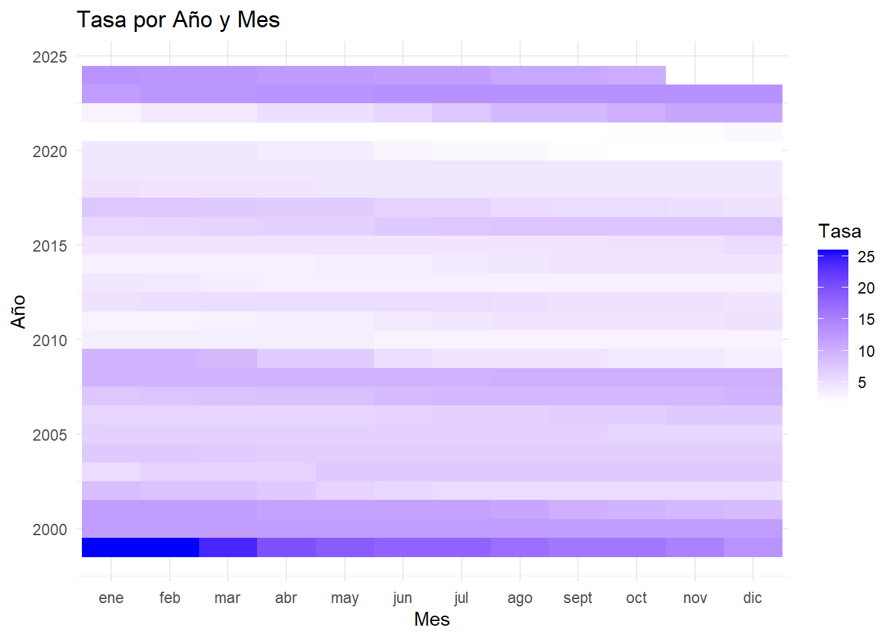
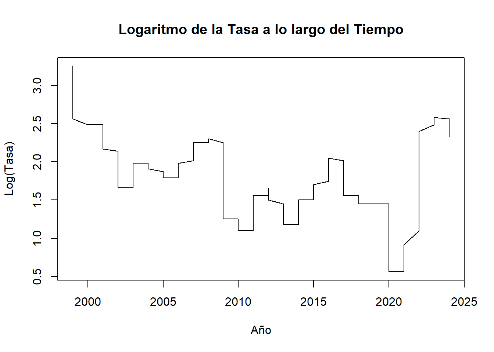
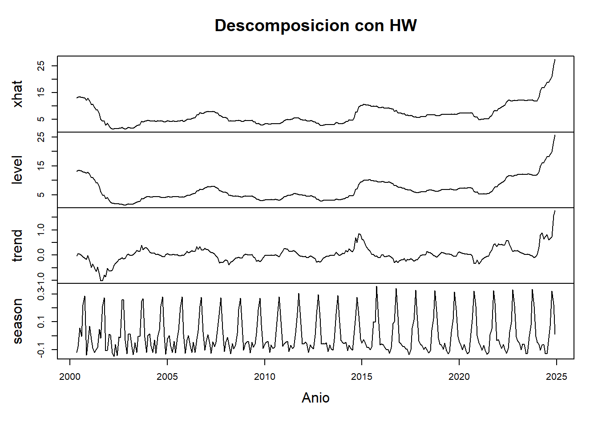

Capítulo: 2 Definición de Modelos
2.1 Modelo Arima
A continuación se probarán dos alternativas de modelo ARIMA, de acuerdo con los análisis realizados previamente, a fin de elegir aquel que se acomode mejor a la serie.
Alternativa 1 - c(1, 2, 3) (1, 1, 1):
Diferenciación no estacional (d): Dado que ya se aplicó una primera diferenciación en los datos y todavía no es completamente estacionaria, es posible considerar incrementar el parámetro de a 2.
Estacionalidad (seasonal): Como existe un patrón estacional claro en la serie, conviene incluir una diferenciación estacional (D = 1) y ajustar los parámetros P y Q para capturar las dependencias estacionales. Se probará el modelo con un seasonal = c(1, 1, 1) para incluir un término autoregresivo y uno de promedio móvil estacional.
Componentes AR y MA (p y q): Dado que p y q determinan la cantidad de términos autoregresivos y de promedio móvil, conviene probar con valores más altos para q y ajustar p de acuerdo con la correlación en los residuos. Esto puede ayudar a mejorar la precisión del modelo y su capacidad predictiva.
## Series: differenced_data
## ARIMA(1,2,3)(1,1,1)[12]
##
## Coefficients:
## ar1 ma1 ma2 ma3 sar1 sma1
## -0.9727 -0.7231 -0.9715 0.6948 -0.1013 -0.8826
## s.e. 0.0467 0.0637 0.0693 0.0509 0.0802 0.0548
##
## sigma^2 = 0.1596: log likelihood = -163.35
## AIC=340.7 AICc=341.1 BIC=366.46
##
## Training set error measures:
## ME RMSE MAE MPE MAPE MASE ACF1
## Training set -0.02662351 0.3862772 0.2369913 NaN Inf 0.6820726 -0.02211654
##
## Ljung-Box test
##
## data: Residuals from ARIMA(1,2,3)(1,1,1)[12]
## Q* = 24.811, df = 18, p-value = 0.1302
##
## Model df: 6. Total lags used: 24
Parámetros no estacionales
p = 1 (un término autoregresivo),
d = 2 (diferenciación de segundo orden para hacer estacionaria la serie en términos de tendencia),
q = 3 (tres términos de promedio móvil).
parámetros estacionales, donde:
P = 1 (un término autoregresivo estacional),
D = 1 (diferenciación estacional),
Q = 1 (un término de promedio móvil estacional),
Los coeficientes y sus errores estándar sugieren que la mayoría de los términos son significativos (coeficientes altos en relación con sus errores estándar).
El test de Ljung-Box evalúa si los residuos del modelo son independientes (no correlacionados). Con un p-valor de 0.1302, se sugiere que los residuos no tienen autocorrelación significativa. Esto indica que el modelo está capturando bien la estructura de la serie.
Los resultados muestran que el modelo ARIMA(1,2,3)(1,1,1)[12] es probablemente adecuado para la serie.
El p-valor del test de Ljung-Box mayor a 0.05 indica que el modelo ha eliminado la mayoría de la autocorrelación en los residuos, lo cual es positivo.
Alternativa 1 - Análisis de Residuos

##
## Shapiro-Wilk normality test
##
## data: residuos_diff
## W = 0.82525, p-value < 2.2e-16Teniendo en cuenta la prueba de normalidad de Shapiro-Wilk, con un valor de 0.82525, siendo relativamente menor a 1, indica que los residuos no siguen una distribución normal.
En cuanto a p-value < 2.2e-16, al ser una cifra tan pequeña, se confirma que los residuos no son normales.
Por su parte, en la gráfica se evidencia un patrón en que los residuos tienen colas más gruesas que una distribución normal, lo cual reafirma la posible presencia de outliers o una distribución sesgada en los datos.
Alternativa 1 - Análisis de volatilidad utilizando Garch
##
## ***** ESTIMATION WITH ANALYTICAL GRADIENT *****
##
##
## I INITIAL X(I) D(I)
##
## 1 1.340879e-01 1.000e+00
## 2 5.000000e-02 1.000e+00
## 3 5.000000e-02 1.000e+00
##
## IT NF F RELDF PRELDF RELDX STPPAR D*STEP NPRELDF
## 0 1 -1.437e+02
## 1 3 -1.480e+02 2.86e-02 7.61e-02 3.8e-01 1.1e+03 1.0e-01 4.29e+01
## 2 4 -1.596e+02 7.30e-02 1.12e-01 2.6e-01 2.0e+00 1.0e-01 2.02e+02
## 3 6 -1.696e+02 5.86e-02 1.37e-01 3.5e-01 2.0e+00 2.7e-01 9.83e+01
## 4 7 -1.778e+02 4.64e-02 2.54e-01 2.4e-01 2.0e+00 2.7e-01 3.97e+00
## 5 9 -1.927e+02 7.71e-02 4.72e-02 2.0e-02 2.0e+00 2.7e-02 4.22e-01
## 6 11 -1.934e+02 3.51e-03 4.53e-03 2.3e-03 7.1e+00 2.7e-03 5.19e+00
## 7 12 -1.935e+02 6.17e-04 9.39e-04 1.8e-03 2.0e+00 2.7e-03 1.07e+00
## 8 16 -1.945e+02 5.36e-03 7.15e-03 5.6e-02 2.0e+00 7.2e-02 8.75e-01
## 9 17 -1.951e+02 2.97e-03 4.48e-03 5.9e-02 2.0e+00 7.2e-02 2.88e-01
## 10 18 -1.960e+02 4.50e-03 5.76e-03 5.5e-02 1.9e+00 7.2e-02 1.89e-01
## 11 19 -1.965e+02 2.57e-03 3.53e-03 5.2e-02 1.9e+00 7.2e-02 5.76e-02
## 12 21 -1.965e+02 3.32e-04 9.85e-04 2.3e-02 1.5e+00 3.3e-02 4.04e-03
## 13 22 -1.966e+02 1.11e-04 4.83e-04 2.0e-02 4.3e-02 3.3e-02 4.83e-04
## 14 23 -1.966e+02 1.72e-04 1.99e-04 1.0e-02 0.0e+00 1.4e-02 1.99e-04
## 15 24 -1.966e+02 4.62e-06 5.26e-05 7.2e-03 0.0e+00 9.6e-03 5.26e-05
## 16 25 -1.966e+02 1.45e-05 1.46e-05 3.2e-03 4.8e-01 4.8e-03 1.56e-05
## 17 26 -1.966e+02 1.82e-06 9.06e-07 9.2e-04 0.0e+00 1.3e-03 9.06e-07
## 18 36 -1.966e+02 -1.45e-15 1.41e-17 1.5e-14 2.9e+07 2.0e-14 1.21e-09
##
## ***** FALSE CONVERGENCE *****
##
## FUNCTION -1.966092e+02 RELDX 1.527e-14
## FUNC. EVALS 36 GRAD. EVALS 18
## PRELDF 1.409e-17 NPRELDF 1.212e-09
##
## I FINAL X(I) D(I) G(I)
##
## 1 1.304269e-02 1.000e+00 1.376e-01
## 2 3.225588e-01 1.000e+00 -8.836e-03
## 3 6.542356e-01 1.000e+00 -8.460e-03##
## Call:
## garch(x = residuos_diff, order = c(1, 1))
##
## Model:
## GARCH(1,1)
##
## Residuals:
## Min 1Q Median 3Q Max
## -4.7470 -0.5934 -0.1147 0.3248 5.6322
##
## Coefficient(s):
## Estimate Std. Error t value Pr(>|t|)
## a0 0.013043 0.001689 7.721 1.15e-14 ***
## a1 0.322559 0.056827 5.676 1.38e-08 ***
## b1 0.654236 0.038567 16.964 < 2e-16 ***
## ---
## Signif. codes: 0 '***' 0.001 '**' 0.01 '*' 0.05 '.' 0.1 ' ' 1
##
## Diagnostic Tests:
## Jarque Bera Test
##
## data: Residuals
## X-squared = 650.13, df = 2, p-value < 2.2e-16
##
##
## Box-Ljung test
##
## data: Squared.Residuals
## X-squared = 0.024148, df = 1, p-value = 0.8765El modelo GARCH(1,1) parece ser adecuado para modelar la volatilidad de residuos_diff, ya que los coeficientes son significativos y el test de Box-Ljung no muestra autocorrelación en los residuos al cuadrado.
La alta significancia de los coeficientes ARCH (a1) y GARCH (b1) indica que tanto los residuos recientes como la volatilidad pasada influyen en la volatilidad actual.
La prueba de Jarque-Bera sugiere que los residuos no siguen una distribución normal, lo cual puede indicar la presencia de colas pesadas o asimetría, características típicas en series financieras.
Este modelo GARCH(1,1) es útil para capturar los cambios en la volatilidad de la serie residuos_diff. La ausencia de autocorrelación en los residuos al cuadrado también sugiere que el modelo ha capturado adecuadamente la heterocedasticidad de la serie.
Auto Arima para identificar la Alternativa 2
# Aplicar auto.arima para determinar los parámetros adecuados, incluyendo las diferenciaciones
modelo_auto <- auto.arima(differenced_data)
print(modelo_auto)## Series: differenced_data
## ARIMA(1,1,2)
##
## Coefficients:
## ar1 ma1 ma2
## -0.5956 -0.1114 -0.4425
## s.e. 0.7747 0.7650 0.5442
##
## sigma^2 = 0.1556: log likelihood = -148.41
## AIC=304.82 AICc=304.95 BIC=319.71El modelo ARIMA(1,1,2) se seleccionó como el mejor ajuste para differenced_data basado en los valores del AIC, AICc, y BIC. La inclusión de términos AR y MA sugiere que hay dependencias de corto plazo en la serie, pero el ajuste no es perfecto, dado el tamaño de los errores estándar y el valor de sigma^2. Si el objetivo es la predicción, este modelo podría ser una buena base, aunque podrían explorarse otros modelos o ajustes adicionales para mejorar la precisión.
Alternativa 2 - c(1, 1, 2) (1, 1, 0):
## Series: differenced_data
## ARIMA(1,1,2)(1,1,0)[12]
##
## Coefficients:
## ar1 ma1 ma2 sar1
## 0.9274 -1.6115 0.6144 -0.4744
## s.e. 0.0393 0.0597 0.0583 0.0620
##
## sigma^2 = 0.213: log likelihood = -190.4
## AIC=390.8 AICc=391.01 BIC=409.22
##
## Training set error measures:
## ME RMSE MAE MPE MAPE MASE ACF1
## Training set 0.04515282 0.4485344 0.2876226 NaN Inf 0.8277919 -0.08017884
##
## Ljung-Box test
##
## data: Residuals from ARIMA(1,1,2)(1,1,0)[12]
## Q* = 62.201, df = 20, p-value = 3.233e-06
##
## Model df: 4. Total lags used: 24Autorregresivo: ar1 = 0.9274: Con un valor positivo, indica que existe una relación directa entre el valor actual de la serie y su valor anterior. Es decir, cuando el valor en el periodo t-1 aumenta, el valor en el periodo actual t tiende a aumentar también.
s.e. = 0.0393: Dado que el error estándar es bajo, indica que la estimación de este coeficiente es muy precisa. Esto sugiere que el modelo tiene una gran confianza en la relación directa entre el valor actual y el valor anterior de la serie temporal.
Media Móvil: ma1 = -1.6115: El coeficiente negativo para ma1 indica que hubo un error negativo en la predicción en el periodo inmediatamente anterior (t-1). Es decir, el modelo predijo un valor más alto que el valor real en el periodo t-1, lo que resultó en un residuo negativo. Este residuo se ajusta en el modelo a través del término de media móvil. s.e. = 0.0597: El error estándar para ma1 es relativamente bajo, lo que sugiere que esta estimación tiene alta precisión. En otras palabras, el ajuste de la predicción actual basado en el error de la predicción del periodo anterior es bastante confiable.
ma2 = 0.6144: Este coeficiente positivo para ma2 indica que el error positivo en la predicción de dos periodos atrás (t-2) tiene una relación directa con el valor actual de la serie; es decir, el modelo sobreestimó el valor real dos periodos atrás, lo que resultó en un residuo positivo que ahora ajusta la predicción para el periodo actual. s.e. = 0.0583: Al igual que el error estándar de ma1, el error estándar de ma2 es bajo, lo que indica que esta estimación es también relativamente precisa.
Autorregresivo estacional (SAR1): sar1 = -0.4744: El coeficiente negativo para sar1 sugiere que existe una relación inversa entre el valor actual de la serie y el valor de la serie con un rezago estacional de un periodo (es decir, el valor de la serie 12 periodos atrás). Si el valor de la serie en el periodo t-12 fue alto, el valor en el periodo actual t tenderá a ser más bajo. s.e. = 0.0620: El error estándar para sar1 es relativamente bajo, lo que indica que esta estimación también es bastante precisa y que el modelo tiene una buena confianza en el impacto de la componente estacional.
el modelo ARIMA(1,1,2)(1,1,0) tiene coeficientes precisos para los diferentes componentes (AR, MA y SAR), lo que sugiere que el modelo está bien ajustado y que las relaciones capturadas por los coeficientes son confiables.
Alternativa 2 - Análisis de residuos

##
## Shapiro-Wilk normality test
##
## data: residuos_diff
## W = 0.82525, p-value < 2.2e-16Los resultados del test de Shapiro-Wilk indican que los residuos (residuos_diff) no siguen una distribución normal.
En cuanto a la gráfica también refleja la No normalidad. La desviación de los puntos en los extremos sugiere que los residuos tienen colas más pesadas de lo que se esperaría bajo una distribución normal. Este resultado es coherente con el Shapiro-Wilk test.
Alternativa 2 - Análisis de volatilidad fGarch
##
## ***** ESTIMATION WITH ANALYTICAL GRADIENT *****
##
##
## I INITIAL X(I) D(I)
##
## 1 1.798156e-01 1.000e+00
## 2 5.000000e-02 1.000e+00
## 3 5.000000e-02 1.000e+00
##
## IT NF F RELDF PRELDF RELDX STPPAR D*STEP NPRELDF
## 0 1 -9.650e+01
## 1 3 -1.042e+02 7.44e-02 7.89e-02 2.8e-01 8.2e+02 1.0e-01 3.25e+01
## 2 4 -1.111e+02 6.20e-02 1.20e-01 3.7e-01 3.4e+00 2.0e-01 4.91e+02
## 3 6 -1.192e+02 6.76e-02 6.37e-02 7.1e-02 2.6e+00 4.3e-02 3.19e+02
## 4 8 -1.201e+02 7.73e-03 1.21e-02 2.5e-02 3.9e+00 1.8e-02 2.54e+02
## 5 9 -1.209e+02 6.63e-03 7.43e-03 1.8e-02 2.0e+00 1.8e-02 1.65e+02
## 6 10 -1.231e+02 1.80e-02 1.88e-02 3.9e-02 2.0e+00 3.7e-02 1.56e+02
## 7 13 -1.333e+02 7.61e-02 1.51e-01 2.9e-01 2.0e+00 3.3e-01 1.04e+02
## 8 17 -1.350e+02 1.25e-02 3.39e-02 8.0e-03 9.6e+00 1.0e-02 4.20e+00
## 9 21 -1.361e+02 8.41e-03 1.24e-02 1.5e-01 1.9e+00 2.4e-01 2.21e-01
## 10 26 -1.362e+02 7.32e-04 1.68e-03 2.1e-03 3.1e+00 2.3e-03 2.20e-01
## 11 27 -1.362e+02 1.75e-04 1.61e-04 1.8e-03 2.0e+00 2.3e-03 1.72e-01
## 12 31 -1.365e+02 2.15e-03 4.63e-03 9.8e-02 1.9e+00 1.3e-01 1.72e-01
## 13 32 -1.369e+02 2.60e-03 3.98e-03 7.1e-02 9.1e-01 1.3e-01 8.01e-03
## 14 34 -1.371e+02 1.88e-03 2.87e-03 1.6e-02 1.3e+00 2.3e-02 5.21e-03
## 15 36 -1.372e+02 9.16e-05 1.63e-04 5.9e-03 8.2e-01 9.4e-03 2.57e-04
## 16 37 -1.372e+02 3.19e-05 1.21e-05 3.7e-03 0.0e+00 7.4e-03 1.21e-05
## 17 60 -1.372e+02 8.29e-16 1.09e-15 1.5e-14 1.7e+09 2.2e-14 6.85e-06
## 18 62 -1.372e+02 -1.04e-15 4.84e-16 6.9e-15 3.7e+09 9.8e-15 7.42e-06
##
## ***** FALSE CONVERGENCE *****
##
## FUNCTION -1.371593e+02 RELDX 6.878e-15
## FUNC. EVALS 62 GRAD. EVALS 18
## PRELDF 4.843e-16 NPRELDF 7.420e-06
##
## I FINAL X(I) D(I) G(I)
##
## 1 1.388353e-02 1.000e+00 6.749e+00
## 2 2.667688e-01 1.000e+00 -9.784e-04
## 3 7.154210e-01 1.000e+00 -7.331e-02##
## Call:
## garch(x = residuos_diff2, order = c(1, 1))
##
## Model:
## GARCH(1,1)
##
## Residuals:
## Min 1Q Median 3Q Max
## -4.13901 -0.39761 0.08921 0.55154 5.00046
##
## Coefficient(s):
## Estimate Std. Error t value Pr(>|t|)
## a0 0.01388 0.00307 4.522 6.12e-06 ***
## a1 0.26677 0.05394 4.946 7.57e-07 ***
## b1 0.71542 0.04765 15.013 < 2e-16 ***
## ---
## Signif. codes: 0 '***' 0.001 '**' 0.01 '*' 0.05 '.' 0.1 ' ' 1
##
## Diagnostic Tests:
## Jarque Bera Test
##
## data: Residuals
## X-squared = 262.14, df = 2, p-value < 2.2e-16
##
##
## Box-Ljung test
##
## data: Squared.Residuals
## X-squared = 0.0032557, df = 1, p-value = 0.9545El modelo GARCH(1,1) parece capturar correctamente la volatilidad en los residuos, dado que no hay autocorrelación significativa en los residuos al cuadrado.
Aunque los residuos no son normales (como muestra la prueba de Jarque-Bera), el modelo es aún válido, ya que los modelos GARCH no requieren normalidad en los residuos.
*El valor elevado de ùëè1 (0.71542) indica una alta persistencia en la volatilidad, lo que es caracter√≠stico en este tipo de series de tiempo financieras.
En resumen, este modelo GARCH(1,1) parece adecuado para modelar la volatilidad de los residuos, aunque los residuos no sean normales.
Comparación de modelos
## Criterios estadísticos:## Modelo 1:## AIC: 340.703## BIC: 366.4642## Modelo 2:## AIC: 390.7992## BIC: 409.2171## Test de Ljung-Box para autocorrelación de residuos:## Modelo 1:##
## Box-Ljung test
##
## data: residuals(modelo_arima)
## X-squared = 20.709, df = 20, p-value = 0.4145##
## Modelo 2:##
## Box-Ljung test
##
## data: residuals(modelo_arima2)
## X-squared = 31.586, df = 20, p-value = 0.04791##
## Test de normalidad Shapiro-Wilk:## Modelo 1:##
## Shapiro-Wilk normality test
##
## data: residuals(modelo_arima)
## W = 0.82525, p-value < 2.2e-16##
## Modelo 2:##
## Shapiro-Wilk normality test
##
## data: residuals(modelo_arima2)
## W = 0.88872, p-value = 3.508e-14##
## Métricas de error en datos de entrenamiento:## Modelo 1:## ME RMSE MAE MPE MAPE MASE ACF1
## Training set -0.02662351 0.3862772 0.2369913 NaN Inf 0.6820726 -0.02211654##
## Modelo 2:## ME RMSE MAE MPE MAPE MASE ACF1
## Training set 0.04515282 0.4485344 0.2876226 NaN Inf 0.8277919 -0.08017884

A nivel general,
ALTERNATIVA 1: muestra problemas de ajuste. Residuos no normales y autocorrelación presente. Aunque captura la tendencia, su precisión en los pronósticos parece más limitada.
ALTERNATIVA 2: ofrece un mejor ajuste. residuos más cercanos a la normalidad, sin autocorrelaciones significativas, y pronósticos con intervalos de confianza más ajustados. Esto lo hace preferible para tomar decisiones basadas en predicciones más consistentes.
En cuanto al análisis de pronótico:
La Alternativa 1 (línea azul punteada) y la Alternativa 2 (línea negra continua) ofrecen pronósticos similares en cuanto a tendencia, pero ela Alternativa 2 parece ser más conservadora, con menores amplitudes en sus intervalos de confianza.
Los intervalos de confianza de la Alternativa 1 (zonas azules sombreadas) son más amplios, indicando mayor incertidumbre, mientras que en la 2 (zonas grises sombreadas) son más ajustados, lo que sugiere mayor precisión o menos variabilidad esperada, por tanto la 2 podría ser más confiable si se busca menor variabilidad en los pronósticos a largo plazo.
En definitiva, la decisión es entonces optar por la Alternativa 2, ya que presenta un mejor comportamiento tanto en el ajuste a los datos como en la calidad de los pronósticos.
2.2 Algoritmo de Holt Winter
Puede manejar la estacionalidad en el conjunto de datos simplemente calculando el valor central y luego sumándolo o multiplicándolo por la pendiente y la estacionalidad. Solo tenemos que asegurarnos de ajustar el conjunto correcto de parámetros, y tenemos el mejor ajuste.
Recuerde siempre verificar la eficiencia del modelo utilizando el valor MAPE (error porcentual absoluto medio) o el valor RMSE (error cuadrático medio), y la precisión puede depender del problema comercial y el conjunto de datos disponible para entrenar y probar el modelo.
Se observan la tendencia y los ciclos:

La gráfica sugiere una disminución en la tasa a lo largo del tiempo, con una estabilización en niveles bajos en los años recientes. Esto podría indicar una mejora en el fenómeno que se está midiendo con la “Tasa”, aunque el contexto específico dependerá de qué represente exactamente esa variable en el análisis.
## Jan Feb Mar Apr May Jun Jul Aug Sep Oct Nov Dec
## 1999 5 6 7 8 9 10 11 12
## 2000 1 2 3 4 5 6 7 8 9 10 11 12
## 2001 1 2 3 4 5 6 7 8 9 10 11 12
## 2002 1 2 3 4 5 6 7 8 9 10 11 12
## 2003 1 2 3 4 5 6 7 8 9 10 11 12
## 2004 1 2 3 4 5 6 7 8 9 10 11 12
## 2005 1 2 3 4 5 6 7 8 9 10 11 12
## 2006 1 2 3 4 5 6 7 8 9 10 11 12
## 2007 1 2 3 4 5 6 7 8 9 10 11 12
## 2008 1 2 3 4 5 6 7 8 9 10 11 12
## 2009 1 2 3 4 5 6 7 8 9 10 11 12
## 2010 1 2 3 4 5 6 7 8 9 10 11 12
## 2011 1 2 3 4 5 6 7 8 9 10 11 12
## 2012 1 2 3 4 5 6 7 8 9 10 11 12
## 2013 1 2 3 4 5 6 7 8 9 10 11 12
## 2014 1 2 3 4 5 6 7 8 9 10 11 12
## 2015 1 2 3 4 5 6 7 8 9 10 11 12
## 2016 1 2 3 4 5 6 7 8 9 10 11 12
## 2017 1 2 3 4 5 6 7 8 9 10 11 12
## 2018 1 2 3 4 5 6 7 8 9 10 11 12
## 2019 1 2 3 4 5 6 7 8 9 10 11 12
## 2020 1 2 3 4 5 6 7 8 9 10 11 12
## 2021 1 2 3 4 5 6 7 8 9 10 11 12
## 2022 1 2 3 4 5 6 7 8 9 10 11 12
## 2023 1 2 3 4 5 6 7 8 9 10 11 12
## 2024 1 2 3 4 5 6 7 8 9 10 11 12
Aunque hay consistencia en la mediana y el rango intercuartílico de la tasa a lo largo de los meses, existen valores atípicos en la segunda mitad del año. Esto sugiere que, aunque la tasa general se mantiene estable, en algunos meses específicos ocurren eventos o circunstancias que resultan en tasas inusualmente altas.

La gráfica sugiere que la tasa ha sido volátil a lo largo de los años, con periodos de estabilidad relativa intercalados con cambios bruscos.
La caída alrededor de 2020 y el rápido aumento posterior podrían reflejar eventos económicos o circunstancias externas que afectaron la tasa en ese periodo.
Esto fue evidenciado en el ANÁLISIS EXPLORATORIO.
2.3 Modelo Holt-Winter
## Holt-Winters exponential smoothing with trend and additive seasonal component.
##
## Call:
## HoltWinters(x = ts_data)
##
## Smoothing parameters:
## alpha: 0.9409767
## beta : 0.2941339
## gamma: 1
##
## Coefficients:
## [,1]
## a 26.078382560
## b 1.351095717
## s1 0.013514274
## s2 0.042701886
## s3 -0.084488171
## s4 -0.120823220
## s5 -0.046940131
## s6 -0.105835904
## s7 -0.176555877
## s8 -0.002083574
## s9 0.085858823
## s10 0.501395118
## s11 0.266415988
## s12 -0.078382560
Parámetro suavizado:
Alpha (α = 0.9409767): Este es el parámetro de suavizado para el componente de nivel. Un valor cercano a 1, como el que está arrojando el resultado, indica que el modelo le da gran peso a los datos recientes para estimar el nivel actual de la serie. Esto significa que las observaciones recientes tienen un impacto significativo en la estimación del nivel.
Beta (β = 0.2941339): Este es el parámetro de suavizado para el componente de tendencia en el modelo de Holt-Winters. Un valor de β moderadamente bajo, como 0.2941339, sugiere que el modelo da un peso relativamente moderado a los cambios en la tendencia. Es decir, el modelo no es extremadamente sensible a las variaciones en la tendencia, pero sigue siendo capaz de capturarlas de manera significativa. Con este valor, el modelo ajusta la tendencia de forma más suave y gradual, lo que implica que no tiene una sobrereacción ante cambios recientes en la dirección de los datos.
Gamma (γ = 1): Este es el parámetro de suavizado para el componente estacional. Un valor de γ = 1 sugiere que el modelo da completo peso a los componentes estacionales previos en la serie.

La tendencia ascendente en el nivel y la tendencia hacia el final del período (2025) sugiere que LA TASA está experimentando un crecimiento continuo.
La componente estacional muestra ciclos regulares bien definidos, lo que puede ser útil para predicciones estacionales precisas.
El modelo Holt-Winters parece ajustarse adecuadamente a la serie, capturando tanto las fluctuaciones estacionales como la tendencia de largo plazo.
Se predice el método Holt Winters
## fit upr lwr
## Jan 2025 27.44299 28.23593 26.65006
## Feb 2025 28.82328 30.07272 27.57383
## Mar 2025 30.04718 31.76924 28.32513
## Apr 2025 31.36194 33.58414 29.13975Con lo anterior, se evidencia una tedencia ascendente en las predicciones para los primeros 4 meses del 2025. De igual forma, se observa un incremento en la incertidumbre a medida que van pasando los meses.

2.4 Metodología Box Jenkins
Dentro de los pasos a seguir, tenemos
Visualizar la serie. Transformarla en estacionaria. Graficar ACF - PACF, escoger los parámetros. Construir el modelo. Hacer predicción.
#PASOS DEL DOCUMENTO DE LA PROFE
# Detectar punto de cambio en la media
mval <- cpt.mean(ts_data, method = "AMOC")
cpts(mval)## [1] 276Sobre la serie original se encuentran 276 puntos de cambio de media.
# Graficar la serie con el punto de cambio resaltado
plot(mval, type = "l", cpt.col = "blue", xlab = "Índice de Tiempo", cpt.width = 4,
main = "Punto de Cambio en la Media")## [1] 2# Detectar punto de cambio en la media
mval <- cpt.mean(differenced_data2, method = "AMOC")
cpts(mval)## numeric(0)mval_varios <- cpt.mean(differenced_data2, method = "PELT") # Detecta múltiples cambios
cpts(mval_varios)## integer(0)Al correr el código sobre la serie ya diferenciada el resultado es 0, indicando que no se ha detectado ningún cambio significativo en la media de la serie. Esto se debe a que al diferenciar la serie, se eliminan componentes como tendencia y cambios en la media, lo que puede hacer que la serie parezca más “estable” en términos de media.
Incluso probando el método de cambio PELT, que es más flexible y busca múltiples puntos de cambio, el resultado sobre la serie diferenciado es 0, indicando que no se detectaron puntos de cambio significativos en la media de la serie de tiempo.
## Warning in locate.outliers.iloop(resid = resid, pars = pars, cval = cval, :
## stopped when 'maxit.iloop' was reached
## Warning in locate.outliers.iloop(resid = resid, pars = pars, cval = cval, :
## stopped when 'maxit.iloop' was reached
## Warning in locate.outliers.iloop(resid = resid, pars = pars, cval = cval, :
## stopped when 'maxit.iloop' was reached## Warning in locate.outliers.oloop(y = y, fit = fit, types = types, cval = cval,
## : stopped when 'maxit.oloop = 4' was reached## Series: dat.ts
## Regression with ARIMA(1,0,1) errors
##
## Coefficients:
## ar1 ma1 LS305
## -0.0547 -0.6145 -0.8617
## s.e. 0.0940 0.0813 0.2282
##
## sigma^2 = 0.1482: log likelihood = -140.84
## AIC=289.68 AICc=289.81 BIC=304.57
##
## Outliers:
## type ind time coefhat tstat
## 1 LS 305 26:05 -0.8617 -3.777
# Ajustar un modelo lineal a la serie diferenciada o a la original si ya es estacionaria
modelo_ajustado <- tslm(differenced_data2 ~ trend)
summary(modelo_ajustado)##
## Call:
## tslm(formula = differenced_data2 ~ trend)
##
## Residuals:
## Min 1Q Median 3Q Max
## -2.00556 -0.00474 0.00312 0.01061 2.99455
##
## Coefficients:
## Estimate Std. Error t value Pr(>|t|)
## (Intercept) -0.0121558 0.0550426 -0.221 0.825
## trend 0.0000579 0.0003108 0.186 0.852
##
## Residual standard error: 0.4802 on 304 degrees of freedom
## Multiple R-squared: 0.0001142, Adjusted R-squared: -0.003175
## F-statistic: 0.03471 on 1 and 304 DF, p-value: 0.8523#Graficar el modelo y los residuos para analizar el ajuste
plot(differenced_data2, main="Serie Diferenciada (si fue necesario) y Modelo Lineal Ajustado", ylab="Valor", xlab="Tiempo")
lines(fitted(modelo_ajustado), col="red")
##
## Breusch-Godfrey test for serial correlation of order up to 24
##
## data: Residuals from Linear regression model
## LM test = 122.2, df = 24, p-value = 3.937e-15